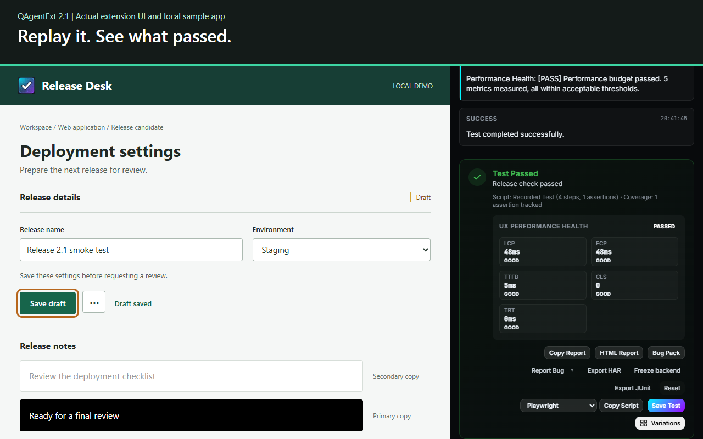

Chrome extension · Browser testing
QAgentExt
Record
a browser flow.
Replay
it as a test.
Export
the script.
Record → Replay → Export
WCAG 2.2 checks
iOS via Appium
CLI for CI
Actual result ·
passed
